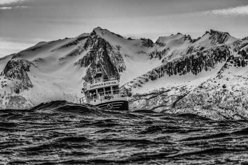

Early life
Amundsen was born to a family of Norwegian shipowners and captains in Borge, between the towns Fredrikstad and Sarpsborg. His parents were Jens Amundsen and Hanna Sahlqvist. Roald was the fourth son in the family. His mother wanted him to avoid the family maritime trade and encouraged him to become a doctor, a promise that Amundsen kept until his mother died when he was aged 21. He promptly quit university for a life at sea. Amundsen had hidden a lifelong desire inspired by Fridtjof Nansen's crossing of Greenland in 1888 and Franklin's lost expedition. He decided on a life of intense exploration of wilderness places.
Belgian Antarctic Expedition (1897–99)
Amundsen joined the Belgian Antarctic Expedition (1897–99) as first mate. This expedition, led by Adrien de Gerlache using the ship the RV Belgica, became the first expedition to winter in Antarctica. The Belgica, whether by mistake or design, became locked in the sea ice at 70°30′S off Alexander Island, west of the Antarctic Peninsula. The crew endured a winter for which they were poorly prepared. By Amundsen's own estimation, the doctor for the expedition, the American Frederick Cook, probably saved the crew from scurvy by hunting for animals and feeding the crew fresh meat. In cases where citrus fruits are lacking, fresh meat from animals that make their own vitamin C (which most do) contains enough of the vitamin to prevent scurvy, and even partly treat it. This was an important lesson for Amundsen's future expeditions.
Northwest Passage (1903–1906)
In 1903, Amundsen led the first expedition to successfully traverse Canada's Northwest Passage between the Atlantic and Pacific oceans. He planned a small expedition of six men in a 45-ton fishing vessel, Gjøa, in order to have flexibility. His ship had relatively shallow draft. His technique was to use a small ship and hug the coast. Amundsen had the ship outfitted with a small gasoline engine. They traveled via Baffin Bay, the Parry Channel and then south through Peel Sound, James Ross Strait, Simpson Strait and Rae Strait. They spent two winters (1903–04 and 1904–05) at King William Island in the harbor of what is today Gjoa Haven, Nunavut, Canada. During this time, Amundsen and the crew learned from the local Netsilik Inuit people about Arctic survival skills, which he found invaluable in his later expedition to the South Pole. For example, he learned to use sled dogs for transportation of goods and to wear animal skins in lieu of heavy, woolen parkas, which could not deter cold when wet.
Leaving Gjoa Haven, he sailed west and passed Cambridge Bay, which had been reached from the west by Richard Collinson in 1852. Continuing to the south of Victoria Island, the ship cleared the Canadian Arctic Archipelago on 17 August 1905. It had to stop for the winter before going on to Nome on the Alaska District's Pacific coast. Five hundred miles (800 km) away, Eagle City, Alaska, had a telegraph station; Amundsen traveled there (and back) overland to wire a success message (collect) on 5 December 1905. His team reached Nome in 1906. Because the water along the route was sometimes as shallow as 3 ft (0.91 m), a larger ship could not have made the voyage.[citation needed]
At this time, Amundsen learned that Norway had formally become independent of Sweden and had a new king. The explorer sent the new King Haakon VII news that his traversing the Northwest Passage "was a great achievement for Norway". He said he hoped to do more and signed it "Your loyal subject, Roald Amundsen." The crew returned to Oslo in November 1906, after almost 3.5 years abroad. It took until 1972 to have the Gjøa returned to Norway. After a 45-day trip from San Francisco on a bulk carrier, the Gjøa was placed in her current location on land, outside the Fram Museum in Oslo.
South Pole Expedition (1910–12)
Amundsen next planned to take an expedition to the North Pole and explore the Arctic Basin. Finding it difficult to raise funds, when he heard in 1909 that the Americans Frederick Cook and Robert Peary had claimed to reach the North Pole as a result of two different expeditions, he decided to reroute to Antarctica. He was not clear about his intentions, and the Englishman Robert F. Scott and the Norwegian supporters felt misled. Scott was planning his own expedition to the South Pole that year. Using the ship Fram ("Forward"), earlier used by Fridtjof Nansen, Amundsen left Oslo for the south on 3 June 1910. At Madeira, Amundsen alerted his men that they would be heading to Antarctica, and sent a telegram to Scott, notifying him simply: "BEG TO INFORM YOU FRAM PROCEEDING ANTARCTIC--AMUNDSEN."
Nearly six months later, the expedition arrived at the eastern edge of the Ross Ice Shelf (then known as "the Great Ice Barrier"), at a large inlet called the Bay of Whales, on 14 January 1911. Amundsen established his base camp there, calling it Framheim. Amundsen eschewed the heavy wool clothing worn on earlier Antarctic attempts in favour of adopting Inuit-style furred skins. Using skis and dog sleds for transportation, Amundsen and his men created supply depots at 80°, 81° and 82° South on the Barrier, along a line directly south to the Pole. Amundsen also planned to kill some of his dogs on the way and use them as a source for fresh meat. A small group, including Hjalmar Johansen, Kristian Prestrud and Jørgen Stubberud, set out on 8 September 1911, but had to abandon their trek due to extreme temperatures. The painful retreat caused a quarrel within the group, and Amundsen sent Johansen and the other two men to explore King Edward VII Land.
A second attempt, with a team made up of Olav Bjaaland, Helmer Hanssen, Sverre Hassel, Oscar Wisting, and Amundsen, departed base camp on 19 October 1911. They took four sledges and 52 dogs. Using a route along the previously unknown Axel Heiberg Glacier, they arrived at the edge of the Polar Plateau on 21 November after a four-day climb. On 14 December 1911, the team of five, with 16 dogs, arrived at the Pole (90° 0′ S).[n 1] They arrived 33–34 days before Scott’s group. Amundsen named their South Pole camp Polheim, meaning "Home on the Pole." Amundsen renamed the Antarctic Plateau as King Haakon VII’s Plateau. They left a small tent and letter stating their accomplishment, in case they did not return safely to Framheim.
The team returned to Framheim on 25 January 1912, with 11 surviving dogs. They made their way off the continent and to Hobart, Australia, where Amundsen publicly announced his success on 7 March 1912. He telegraphed news to backers.
Amundsen's expedition benefited from his careful preparation, good equipment, appropriate clothing, a simple primary task, an understanding of dogs and their handling, and the effective use of skis. In contrast to the misfortunes of Scott’s team, Amundsen’s trek proved relatively smooth and uneventful.